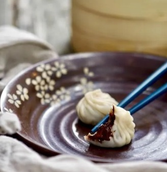

Chocolate Xiao Long Bao
A creative dessert twist on the classic Chinese soup dumplings, filled with rich melted chocolate. Xiao Long Bao itself is a type of Chinese steamed bun (baozi) from the Jiangnan region in China. Traditionally prepared in a “xiaolong”, which is a kind of small bamboo steaming basket is how they got their name, Xiao Long Bao, or Xiaolongbao.

Ingredients:
- Dumpling wrappers
- Dark chocolate
- Cocoa powder
- Cornstarch
- Sugar